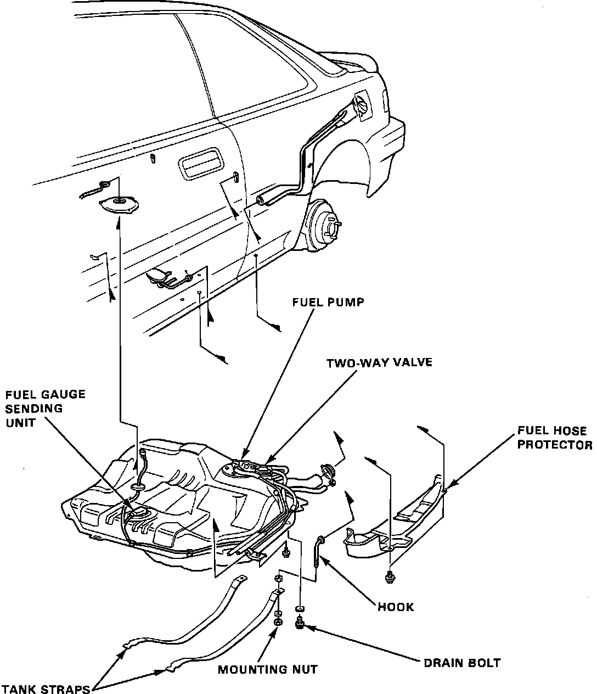

Fuel Tank: Testing and Inspection
NOTE: To perform a complete inspection as listed below it is necessary to remove the fuel tank. For these procedures refer to "COMPONENT REPLACEMENT AND REPAIR PROCEDURES".Fuel Tank:

1. Check the hoses and pipes for cracks or damage.
2. Check the fuel tank filler cap for proper fit and seal.
3. Check the Fuel Tank for deformation, corrosion or cracking.
4. Check the inside of the Fuel Tank for dirt, rust or foreign material.
5. Check the in-tank fuel filter for damage or restriction.
6. Test the two-way valve for proper operation.
7. To check the two-way valve, lightly breathe into the inlet and outlet. If air passes through after slight resistance, then the valve is GOOD. If the valve flows air freely with no resistance or is clogged and flows no air at all, replace the two-way valve and retest.
FUEL TANK LEAK TEST:
NOTE: Perform this test only after the Fuel Tank has been removed and cleaned.
1. Plug all outlets as follows:
a. Install the filler neck and hoses, including upper neck assembly and filler cap.
b. Install the fuel level sending unit assembly with the seal.
c. Plug the fuel supply and return lines at the fuel pump outlets.
d. Install a short piece of fuel line on the vent tube outlet of the fuel pump.
2. Slowly apply air pressure inside the tank through the fuel line installed on the vent tube outlet. As soon as air can be heard escaping from the filler cap, air pressure will be approximately:
1.0 - 1.5 psi (7.0 - 10.0 kPa),
STOP the applied air pressure and pinch the fuel line installed on vent tube outlet to retain pressure inside the Fuel Tank.
CAUTION: Permanent and unrepairable damage will result if pressure inside the Fuel Tank exceeds:
1.5 psi (10.0 kpa)
3. Test suspect area for leaks with a soap solution or by submersion. If a leak is detected, repair or replace the Fuel Tank or leaking component.
WARNING: DO NOT attempt to weld on the Fuel Tank. Even after purging, the Fuel Tank presents a potentially fatal explosion hazard.